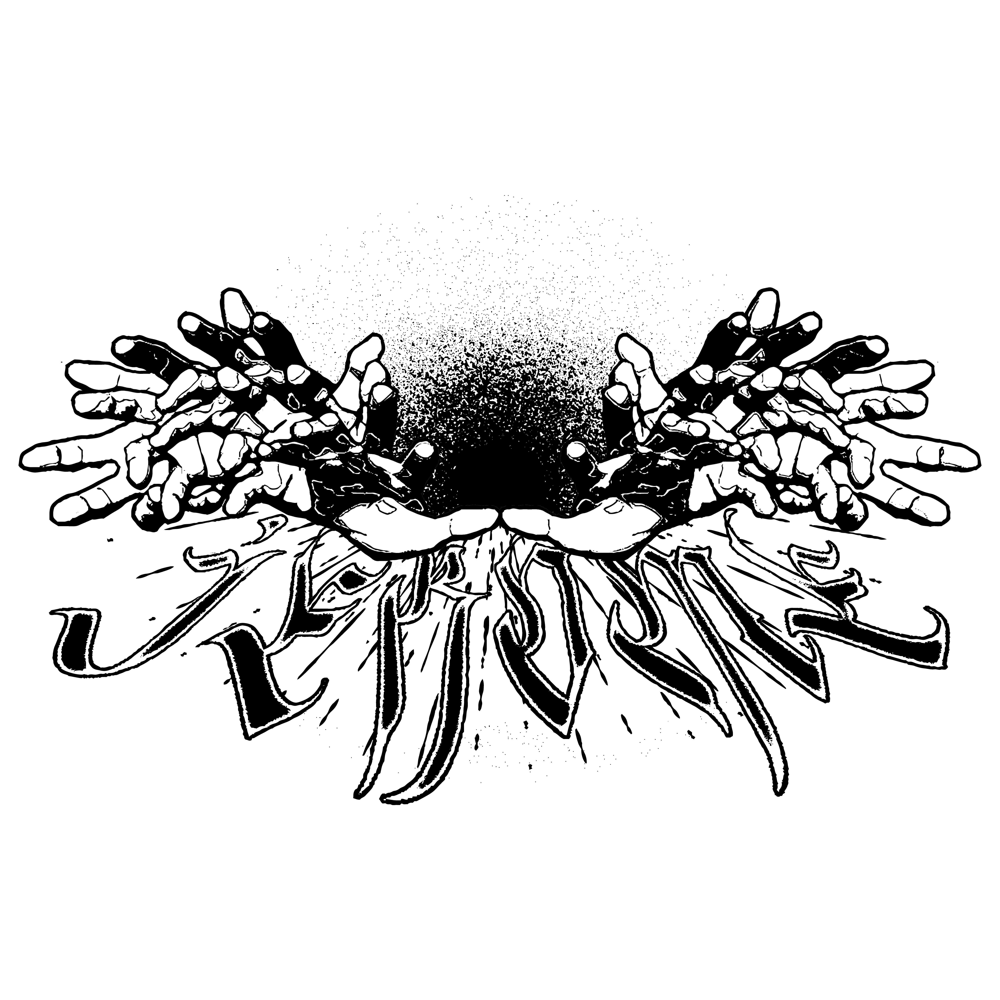

Based in Pennsylvania, JEROME was founded in 2016 by Matt Lutz as an experimental label and platform dedicated to music driven by ideas rather than genre or popularity. Originally launched as a mixfile series to provide a voice for lesser-known talent, the project has since evolved into a label featuring releases from artists such as Worli, Morten HD, BLEID, Lensk, and more.
JEROME is embarking on a new chapter: JEROME FM. This digital radio station serves as a home for our friends and collaborators to explore diverse musical territories, both past and present.
Have you every listened to a track while doing something?
If so, this solves your issue of being frustrated by being able to find the tracks you listened to while doing stuff
*some tracks maybe "lost media" because of how soundcloud works with the upload limit... If it seems this is the case email Gussief167@gmail.com
Created by me DJ ME
If so, this solves your issue of being frustrated by being able to find the tracks you listened to while doing stuff
*some tracks maybe "lost media" because of how soundcloud works with the upload limit... If it seems this is the case email Gussief167@gmail.com
Created by me DJ ME